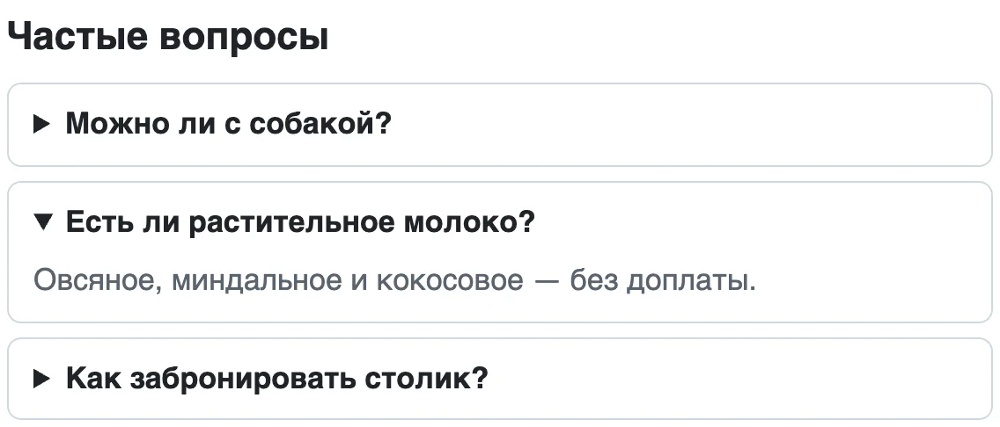

Модуль 1. HTML и CSS. Урок 4
HTML — основа страницы
Документ, теги, семантика
Фронтенд с нуля
Часть 1
Что такое HTML
Язык, который объясняет браузеру, что где на странице
HTML — что есть на странице. CSS — как это выглядит. JavaScript — что это делает
Разметка
<h1>Кофейня «Зерно»</h1>
<p>Варим кофе с 8 утра.</p>
<ul>
<li>Эспрессо</li>
<li>Капучино</li>
</ul>h1— главный заголовокp— абзацul+li— список
Без тегов браузер склеит всё в одну строку
Анатомия тега
<a href="about.html"></a>Одиночные теги без пары: img, br, meta, link, input
Атрибуты, которые нужны каждый день
- href куда ведёт ссылка
- src откуда взять картинку
- alt что на картинке — для тех, кто её не видит
- id уникальное имя элемента: для якорей и подписей
Вложенность — как коробки
Правильно
<p>Кофе <strong>очень</strong> горячий</p>Неправильно
<p>Кофе <strong>очень</p> горячий</strong>Что открыли последним — закрываем первым
Каркас страницы
<!doctype html>
<html lang="ru">
<head>
<meta charset="utf-8">
<title>Кофейня «Зерно»</title>
</head>
<body>
<h1>Кофейня «Зерно»</h1>
</body>
</html>! и Tab в VS Code — и не забудьте lang="ru"
Документ — это дерево
- html/
lang="ru"- head/служебное
- metacharset
- metaviewport
- titleтекст вкладки
- body/видимое
- h1
- p
- head/служебное
Что ещё кладут в head
| Строка | Зачем |
|---|---|
<title> |
текст вкладки и заголовок в поиске |
<meta name="description"> |
описание в поисковой выдаче |
<link rel="icon"> |
значок на вкладке |
<link rel="stylesheet"> |
стили — в следующем уроке |
Часть 2
Текст
Заголовки, абзацы, выделения и списки
Заголовки — это оглавление
- h1/Рецепт блинов
- h2Ингредиенты
- h2/Приготовление
- h3Тесто
- h3Жарка
Уровень — по смыслу, размер поменяем в CSS
Правила заголовков
- 1
h1на страницу — как название книги - 6 уровней, но обычно хватает трёх
- 0 пропусков: после
h2идётh3
Выделение в тексте

strong — важно, b — просто жирно. Смысл пишем в HTML, внешний вид — в CSS
Списки
<ul>
<li>Молоко</li>
<li>Яйца</li>
</ul>Порядок не важен
<ol>
<li>Смешайте</li>
<li>Жарьте</li>
</ol>Порядок важен
Список определений
<dl>
<dt>Эспрессо</dt>
<dd>30 мл крепкого кофе</dd>
<dt>Раф</dt>
<dd>Эспрессо, сливки и ванильный сахар</dd>
</dl>Термин — описание: глоссарий, характеристики, меню
Спецсимволы
| Код | Что покажет |
|---|---|
<p> |
<p> как текст, а не тег |
100 ₽ |
число и рубль не разорвутся |
& |
знак & |
Часть 3
Ссылки и картинки
Как связать страницы и показать фото
Куда ведёт ссылка
- Другой сайт
https://…— полный адрес - Своя страница
about.html— путь от файла - Место на странице
#contacts— кid="contacts" - Почта и звонок
mailto:иtel:
Новая вкладка
<a href="https://developer.mozilla.org"
target="_blank" rel="noopener">MDN</a>target="_blank" — новая вкладка, rel="noopener" — защита вашей страницы
Пути к файлам
- zerno/
- index.htmlпишем ссылки отсюда
- about.html
href="about.html" - img/
- logo.png
src="img/logo.png"
- logo.png
- menu/
- coffee.html
href="menu/coffee.html"
- coffee.html
Путь — от текущего файла, как в Терминале. Из menu/coffee.html к логотипу: ../img/logo.png
Картинки
<img src="img/pancakes.jpg"
alt="Стопка блинов со сметаной">| Значение alt | Оценка |
|---|---|
| «Стопка блинов со сметаной» | хорошо |
| «картинка» | бесполезно |
пустой alt="" |
для украшений |
Форматы картинок
- JPG фотографии
- PNG прозрачность и скриншоты
- SVG логотипы и иконки: чёткие при любом размере
- WebP современная замена, весит меньше
Картинка с подписью
<figure>
<img src="img/latte.jpg" alt="Латте с рисунком листа">
<figcaption>Латте-арт от бариста Анны</figcaption>
</figure>Раскрывающийся блок

<details>
<summary>Можно с собакой?</summary>
<p>Да, на веранде.</p>
</details>Встроенная страница
<iframe src="https://yandex.ru/map-widget/v1/…"
width="600" height="400"
title="Кофейня на карте" loading="lazy"></iframe>Карта, видео — код даёт сам сервис: «Поделиться → Встроить»
Часть 4
Семантика
Теги, которые называют части страницы по смыслу
Семантическая разметка

Какой тег выбрать
| Кусок страницы | Тег |
|---|---|
| Шапка / подвал | header / footer |
| Меню | nav |
| Основное, один на страницу | main |
| Раздел с заголовком | section |
| Пост, карточка, отзыв | article |
| Боковая колонка | aside |
| Контакты | address |
| Просто обёртка | div |
Как проверить разметку
- Biome подчеркнёт
alt,lang, пустые ссылки - Elements покажет дерево, которое построил браузер
- Плашка проверок в домашнем задании
Частые ошибки
- h3 «потому что меньше» уровень — по смыслу
- Всё на div структуру не поймут ни поисковик, ни VoiceOver
- Путь с вашего Mac у других картинки не будет
- Logo.PNG на сервере регистр важен
Воркшоп: сайт кофейни из двух страниц
- Каркас язык, заголовок вкладки, семантика
- Картинка из папки
imgс понятнымalt - Ссылки вторая страница, ломаем и чиним ссылку
- Проверка Biome и дерево в DevTools
Домашнее задание
- Страница-рецепт
- Сайт из трёх страниц с меню
- Из div-супа в семантику
- Со звёздочкой: страница о себе